범죄·느와르 웹툰 추천 TOP 30
범죄, 느와르, 사회고발 같은 태그가 붙은 작품을 모았어요. 네이버웹툰·카카오웹툰·레진코믹스에서 조건에 맞는 작품 65개 중 인기 순으로 30개를 골랐어요. 인기 TOP 3: 참교육, 김부장, 입학용병
2026-10-06 기준 · 성인 작품 제외
내 취향으로 더 좁혀서 추천받기 →-
1
 네이버웹툰
네이버웹툰참교육
무너진 교권을 지키기 위해 교권보호국 소속 나화진의 참교육이 시작된다! <부활남> 채용택 작가 X <신석기녀> 한가람 작가의 신작!
사회고발사이다학원액션자극적인참교육네이버웹툰에서 보기 → -
2
 네이버웹툰
네이버웹툰김부장
“제발 안경 쓴 아저씨는 건들지 말자…” 오직 자신의 딸 '민지'를 위해 특수요원직을 관두고 평범함을 선택한 가장 김부장. 그러던 어느 날 민지가 소리소문 없이 사라지고, 김부장은 자신을 감시하는 국가를 적으로 돌리면서까지 딸을 찾아나서기 시작하는데... [외모지상주의], [싸움독학]…
범죄느와르사이다자극적인시리어스네이버웹툰에서 보기 → -
3
 네이버웹툰
네이버웹툰입학용병
어린 시절 비행기 추락 사고의 유일한 생존자 유이진. 살아남기 위해 용병으로 살아가던 유이진은 10년 후, 가족이 있는 고향으로 돌아왔다.
느와르사이다학원액션우정가족네이버웹툰에서 보기 → -
4
 네이버웹툰
네이버웹툰똑 닮은 딸
'우리 엄마가 살인마인 것 같다.' 성적 우수, 품행 단정, 모범적인 자식인 길소명은 엄마가 요구하는 기준에 맞춰 완벽한 딸로 살아왔다. 그러나 남동생이 강물에서 시체로 떠오른 그 날, 소명의 머릿속엔 섬뜩한 의혹이 피어오른다. 자식의 인생에 방해되는 모든 것을 없애려는 엄마와 그녀에…
범죄입시명작고자극드라마자극적인네이버웹툰에서 보기 → -
5

-
6
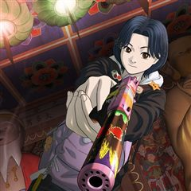
카카오웹툰BLOCK
"나는 해결사다. 그리고 오늘... 첫 임무를 시작한다." 킬러가 되기 위해 휴학까지 한 주시영, 드디어 역사적인 데뷔....!를 하려 하는데 동네 사람들이 전부 미친 거 같다. 이 동네 왜 이래? 이러다 나도 미치는 거 아냐...?!
느와르미스터리카카오웹툰에서 보기 → -
7
 네이버웹툰
네이버웹툰백XX
정보사(HID) 요원 '백이수'와 범죄 조직의 보스인 쌍둥이 형 '백도경'. 같은 얼굴 다른 삶을 살아온 쌍둥이 형제. 조직에 배신당한 동생은 자신의 신분을 버리고 형이 되기로 한다. 정보사요원, 범죄 조직의 보스가 되다...!
범죄느와르자극적인시리어스가족네이버웹툰에서 보기 → -
8
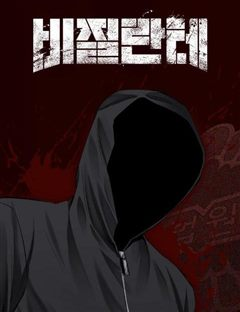
-
9
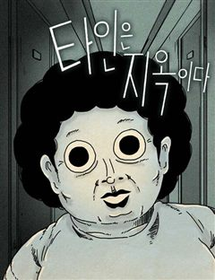
네이버웹툰타인은 지옥이다
모든 게 낯선 고시원 생활. 그곳에 수상한 자들이 있다. 화제의 드라마원작 재연재! 놓치지 마세요!
범죄몰아보기컷툰명작드라마&영화 원작웹툰네이버웹툰에서 보기 → -
10
 네이버웹툰
네이버웹툰나쁜사람
착한 남자가 좋다는 그녀의 이상형이 되기 위해 10년 동안 노력했다. 그런데! 갑자기 나쁜 남자가 좋다는 그녀... 오늘부터 난... 나쁜 남자로 다시 태어난다.
느와르사이다학원액션참교육가벼운네이버웹툰에서 보기 → -
11
 네이버웹툰
네이버웹툰귀촌리
평범한 시골 마을 '귀촌리'를 찾은 '허무명'. 그는 돌아가신 할머니의 빈 집에 조용히 숨어든다. 그런데 집이 이상하리만큼 깔끔하다. 할머니가 돌아가신 건 3년 전인데? 어쩐지 마을 사람들은 이방인 무명의 방문을 달가워 하는 것 같지 않다. 아니, 실은 경계하는 것 같다. 그리고 그…
범죄고자극스릴러자극적인시리어스피카레스크네이버웹툰에서 보기 → -
12
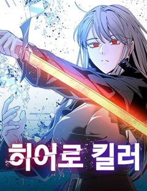
네이버웹툰히어로 킬러
전쟁은 빌런들의 패배로 막을 내렸다. 이제 세상은 부패한 히어로들이 지배하고 있다. 그리고, 그런 히어로들 중 하나가 이화의 언니를 죽였다. 언니를 죽인 게 누구인지는 모르지만 상관없다. 한 놈씩 죽이다 보면 그중에 있을 테니까. 이화는 매일 밤 영웅들을 사냥하는 빌런, 히어로 킬러가…
범죄사이다현대판타지자극적인현대네이버웹툰에서 보기 → -
13
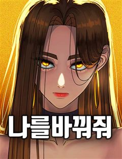
네이버웹툰나를 바꿔줘
수상한 생명보험에 드는 조건으로, 하루 아침에 내가 원하는 외모로 살 수 있게 된다면? 인생을 바꾸기 위해 얼굴을 훔치다!
사회고발고자극드라마자극적인악역이주인공빌런네이버웹툰에서 보기 → -
14
 네이버웹툰
네이버웹툰킬러경찰
조직의 배신으로 죽게 된 전설의 킬러 ‘비광’, 경찰 ‘김경수’의 몸으로 환생한 그는 자신을 배신했던 킬러조직 화국사에게 복수를 다짐한다.
느와르현대동양환생참교육네이버웹툰에서 보기 → -
15
 네이버웹툰
네이버웹툰소년교도소
조폭인 아버지를 식물인간으로 만들어 소년교도소에 수감된 ‘차주영’. 얼마 뒤, 깨어나지 못할 거라 여겼던 아버지가 찾아와 말한다. “아들아, 내가 너의 소꿉친구를 죽였다” 그런 아버지에게 복수할 방법은 단 하나 ‘이 교도소를 장악하는 것’
범죄느와르가족혐관사연남네이버웹툰에서 보기 → -
16네이버웹툰
범죄도시0
통쾌하게 싹 쓸어버린다! 괴물형사 마석도의 초보 시절! 최악,최강의 조폭을 소탕하기 위한 은밀한 작전이 시작된다. 영화 <범죄도시> 시리즈의 공식 프리퀄 웹툰
느와르개그영화원작웹툰드라마&영화 원작웹툰네이버웹툰에서 보기 → -
17
 네이버웹툰
네이버웹툰레드셔츠
킬러 회사의 전설, 차시혁. 사랑하는 여자를 만나 은퇴를 결심하지만, 회사는 그를 쉽게 놔줄 생각이 없었다. 결국, 그의 모든 것을 앗아가기 시작하고, 차시혁은 다시 칼을 든다. 복수가 시작되고, 거대한 조직 ‘네빌가’와의 전쟁도 피할 수 없게 되는데… 복수의 칼날 끝, 과연 무엇이…
느와르전쟁액션미친작화요즘핫한추천작네이버웹툰에서 보기 → -
18
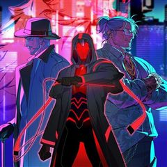
카카오웹툰신수도시
신수가 잠들어 있는 도시 낙원향. 이곳은 신수의 힘을 악용하는 조직 아비시에게 지배당하고 있다. 아비시에게 가족을 빼앗긴 전 경찰 하운은 우연한 기회에 얻어 이들이 가진 신수의 힘에 대항할 수 있는 유일한 수단인 ‘헌트독 시스템’을 얻게 된다. 허나 아비시와 싸워나가며 낙원향과 신수들…
느와르카카오웹툰에서 보기 → -
19카카오웹툰
경성탐정사무소
휘황찬란한 불야성, 화려한 욕망의 도시 경성. 명치정 일정목 사십오 번지 경성탐정사무소의 문이 열렸다. 혈혈단신 천애 고아, 가진 것은 씩씩함 하나뿐인 열여섯 소녀 소화는 은밀한 덫에 걸려들고 만다. “아니에요! 저는 아무것도 몰라요, 정말이에요!” 홀로 탐정사무소를 운영하는 청년 정…
범죄사이다설렘폭발카카오웹툰에서 보기 → -
20
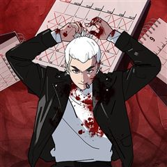
카카오웹툰디 마이너스
195억 원이라는 거금을 수령하기 하루 전, 청부업자들에게 살해당하는 주인공 안지헌. 다시 눈을 떴을 때 그는 영화에서나 보던 일이 자신에게 벌어지고 있음을 직감한다. 하루씩 거꾸로 가는 시간 여행! 잠에서 깨면 내일이 아니라 어제가 된다. 하지만 신기한 것도 잠시. 195억 원을 코…
범죄미스터리액션카카오웹툰에서 보기 → -
21
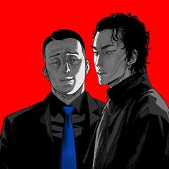
카카오웹툰악어
19세의 나이, 살인을 저지르고 10년의 수형 생활을 마친 정인후. 출소 후 삶을 꿈꾸지만 현실을 쉽지않다. 그러던 어느 날, 과거 자신이 죽인 김상철의 아내 윤진희가 찾아와 아들 김루환의 경호를 제안한다.
느와르자극적인액션카카오웹툰에서 보기 → -
22
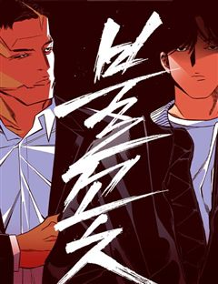
네이버웹툰불꽃
카지노, 주류, 건설, 대부업까지 하나로 묶어놓은 (주)운중의 초대회장 이운일, 그리고 그의 후계자 이주화 회장. 한 날 한 시에 떠나버린 두 부자의 갑작스러운 죽음으로 운중의 이권다툼이 시작된다. 회사의 이권다툼에 정면으로 나선 운중의 실장 남대균, 그리고 친구의 부탁에 자신도 모르…
느와르사이다시리어스우정먼치킨네이버웹툰에서 보기 → -
23네이버웹툰
프롤로그에서 30년이 흘렀다
처음 보는 세계에 ‘빙의’했다. 왕도 RPG라고 생각하고 30년을 보냈다. 전쟁영웅이 되어 퇴역했고, 이제 엔딩을 맞이할 예정이었다. 그런데ㅡ 지금까지의 30년이 프롤로그였고, 심지어 아카데미물이었다고?
느와르액션판타지아카데미물빙의먼치킨네이버웹툰에서 보기 → -
24
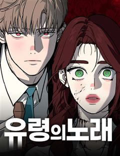
네이버웹툰유령의 노래
어렸을 때부터 환청을 듣는 병을 앓아왔던 노아. 어느 날 의문의 살인사건이 일어나고, 환청은 범인을 알고 있다며 노아에게 속삭인다. 진실을 알 수 없어 혼란스러워하는 그녀의 주변에 이상한 일이 일어나기 시작한다.
범죄고자극스릴러시리어스서양미스터리네이버웹툰에서 보기 → -
25
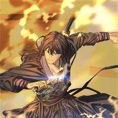
카카오웹툰기연독식
사십이 년 동안 흑사회에 몸을 담고 남은 것이라고는 동전 열다섯 문이 전부인 예순 살의 도통달은 죽음을 목전에 둔다. 이룬 것 없는 그는 마지막을 장식하려 산길에서 눈에 쌓여 가며 숨을 거두는데… 회귀가 일어나 열여덟 살의 새로운 생이 그를 반긴다. ‘이번 생은 다를 겁니다.’ 볼품없…
느와르사이다액션카카오웹툰에서 보기 → -
26
 네이버웹툰
네이버웹툰사채지간
냉혈한 사채업자 김상안. 교사였던 여동생이 학생들의 괴롭힘으로 스스로 목숨을 끊자, 그 목숨 값을 받기 위해 가해학생들의 담임이 된다. 지옥에 떨어져도 빚은 받아내는 사채업자와 악마 같은 학생들의 지독한 사제지간.
느와르지금추천작복수극네이버웹툰에서 보기 → -
27네이버웹툰
암살청과
누가 봐도 평범한 보통의 취준생, 정보통. 평생의 콤플렉스였던 평범함이 빛을 발하는 재능의 영역임을 뜻밖의 직무에서 확인하게 되고, 그는 킬러가 되기로 한다. 세상의 상식과는 다른 생태계인 위기일발 킬러 업계에서, 과연 평범한 보통의 킬러 정보통은 최고가 될 수 있을까?!
범죄느와르블랙코미디현대액션네이버웹툰에서 보기 → -
28
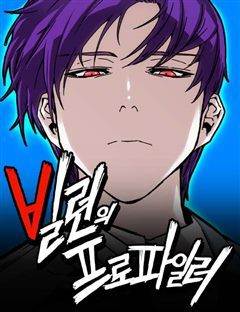
네이버웹툰빌런의 프로파일러
살인자로부터 엄마를 잃고, 사고를 당한 아이 이신혁. 여러 지식과 학습할 수 있는 신비한 공간에서 15년간 지식을 쌓은 뒤, 한 달 만에 코마 상태에서 깨어나게 된다. 15년간 쌓은 지식과 능력으로 사람을 위협하는 존재들과 죽은 자의 억울함을 풀어주는 천재 프로파일러가 되어가는, 프로…
범죄고자극스릴러시리어스직업드라마두뇌싸움네이버웹툰에서 보기 → -
29
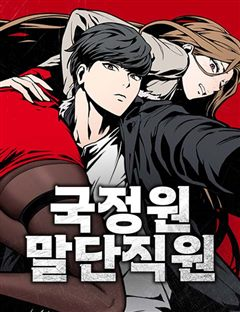
네이버웹툰국정원 말단직원
시험 없이 7급 공무원 되는 개꿀팁! 추천으로 군 복무 중 '국정원 특채'되기..! 그렇게 난 세계의 화약고 중국 단둥시에서 집에 앉아 압록강 철교를 감시하는 임무를 맡았다. 하지만 500만 원짜리 야간 근무를 기점으로 내게 자꾸 여러 나라가 엮이는 큰 사건이 터지기 시작했다. 하,…
범죄액션개그먼치킨소설원작네이버웹툰에서 보기 → -
30
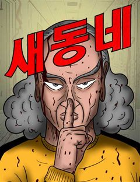
네이버웹툰새동네
오갈 데 없는 노인들이 산간벽지를 개간해 작은 마을 공동체를 이루며 살기 시작하였으니, 이름하여 새동네! 어느 날, 새동네 일대가 신도시 재개발에 휩싸이고 부정한 세력들이 들어오자 마을의 평화와 존립을 위해 결국 노인들이 나서며 경고하는데…... “잠 자는 사자의 코털은 건드는 게 아…
범죄느와르고자극스릴러액션참교육네이버웹툰에서 보기 →